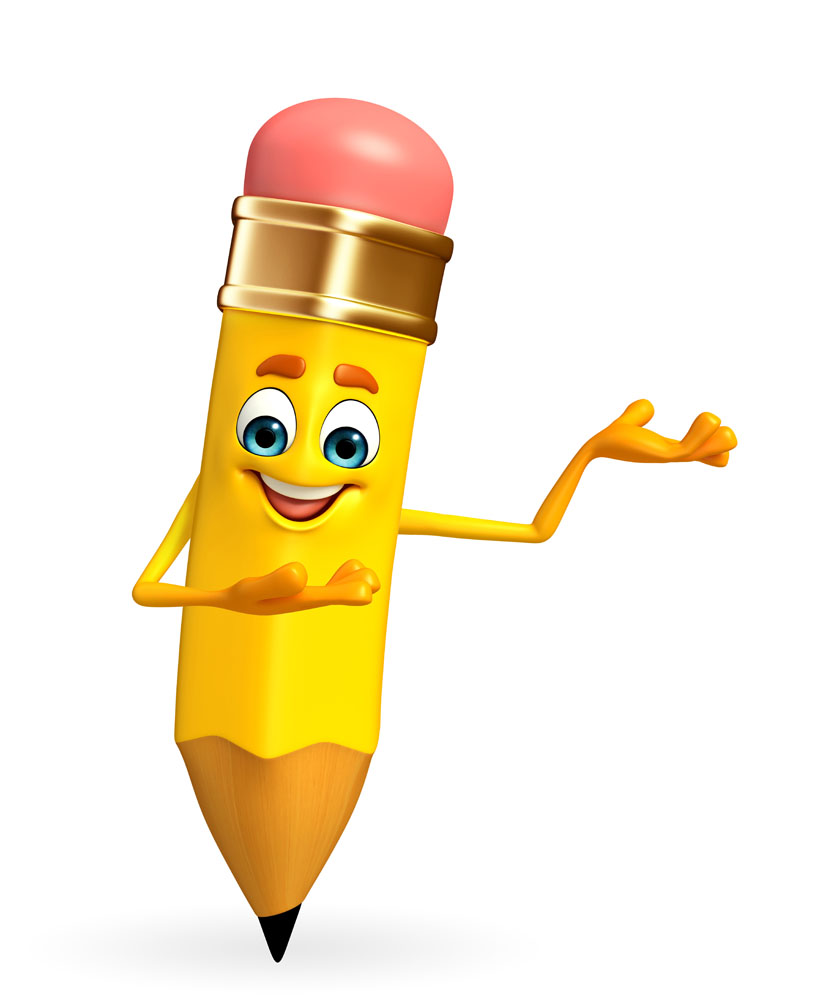

首页>>网站模板
发布时间：2015-04-05 作者：段亮

有些事，明知是错的，也要去坚持，因为不甘心；有些人，明知是爱的，也要去放弃，因为没有结局； 有时候，明知没路了，却还在前进，因为习惯了。 博客建立也有一年多的时间了，在这期间，经历过2个版本的更新迭代。可能最早陪着我博客一起走来的朋友们都知道
发布时间：2014-09-23 作者：段亮

时间就像沙漏，一点一点的流走，错过的时间，错过的事情，错过的人，都不会再像沙漏倒转回来。其实最美的时光莫过于回忆！ 这款个人博客模板之 回忆 采用html5+css3设计（全静态html、没有后台程序）。在导航上：采用鼠标悬停渐变显示英文标题的特效， banne
发布时间：2015-04-10 作者：杨青

展示的是首页html，博客页面布局格式简单，没有复杂的背景，色彩局部点缀，动态的幻灯片展示，切换卡，标签云...此作品设计图作者窦耀宇
发布时间：2014-09-18 作者：杨青

Html5+css3情侣博客模板，主题《回忆》，使用css3技术实现网站动画效果，主题《回忆》,分为四个主要部分，照片墙、情侣介绍、图文组、祝福模块。